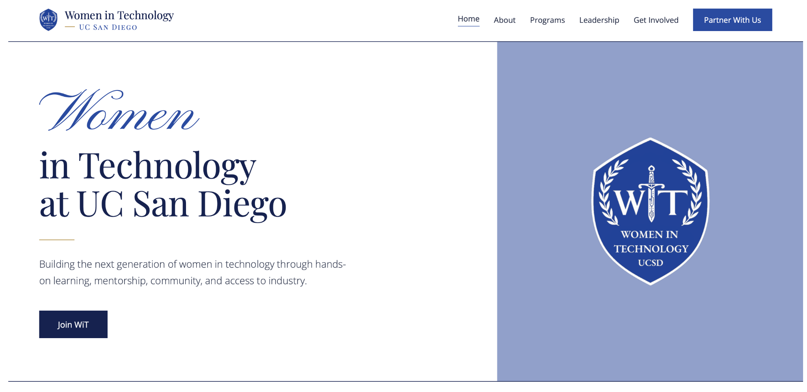
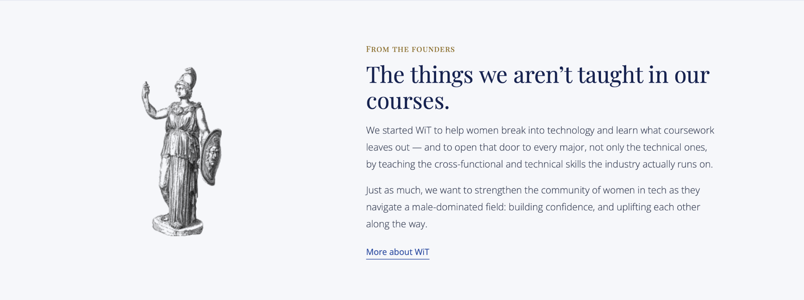
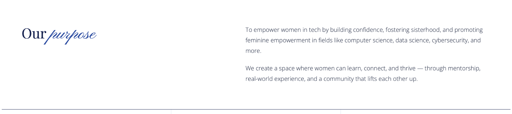

Making the technology industry feel more accessible.
Co-founding Women in Technology at UC San Diego around a simple belief: students from any major deserve access to practical tech skills, mentorship, and real industry connections.
Your major should not define your access to technology.
I helped co-found Women in Technology because I believe you do not need to major in computer science—or any particular subject—to build a career in technology. As a Communication student pursuing product work, I had felt how easy it was to assume those paths were reserved for technical majors. I also saw a gap in meaningful mentorship and access to women already working in the industry. With my co-founder, I wanted to create a place where students could meet professionals, learn practical skills, and feel that they belonged in tech.
The wider mentorship gap: A 2025 WomenTech Network survey of 4,274 women globally found that approximately half said mentorship was not readily accessible in their organizations (24% not accessible at all; 26% not very accessible). This is industry context, not a measurement of UCSD students. Read the survey ↗
Three kinds of events.
Meet the people doing the work.
Industry conversations and panels offering a closer look at career paths, decisions, and real professional experiences.
Practice the skills.
Hands-on professional development, including workshops around product thinking, networking, negotiation, and industry tools.
Build a starting point.
An emerging programming concept aimed at giving students approachable resources and ways to explore technology.
These describe the programming framework and plans, not a claim that every series has already launched.
The club’s website.

A clear first impression.
The homepage communicates the club’s mission quickly: hands-on learning, mentorship, community, and industry access.

Why the club exists.
The founders’ section reinforces the belief that tech should feel accessible to students across majors—not only those in traditional technical pathways.

Mission with practical meaning.
The site translates the broader mission into a student-facing purpose: confidence, sisterhood, mentorship, and real-world experience.
From idea to organization.
Built the organization's direction with my co-founder around mentorship, career access, and applied learning.
Brainstormed workshops, speaker conversations, and a multi-event series rather than generic one-off panels.
Reached out to professors, alumni, and industry professionals to explore speakers, collaboration, and mentorship opportunities.
Developed event messaging, promotion, and logistics for the organization's introductory programming.
Building a club is building an experience.
Who felt left out
Students outside technical majors often assume tech careers aren’t for them, and mentorship from women in the industry is hard to find.
A place to belong
Somewhere students can meet professionals, learn practical skills, and feel they belong in tech.
A series, not one-offs
Tech Talks, WiTWorks, and WiTKit, each with a clear audience and takeaway.
Opening doors
Outreach to professors, alumni, and industry professionals for speakers and mentorship.
Students are the users.
Understand what they're trying to achieve and where they need support—from figuring out what a product manager does to practicing a tool for the first time.
Programming is the product.
Design sessions with a clear audience, useful takeaway, strong partner fit, and a reason to come back.
Next evidence to add: event flyers, photos, speaker partnerships, attendance figures, student feedback, collaboration proposals, and actual event outcomes. These will turn this initial leadership overview into evidence-backed case studies.